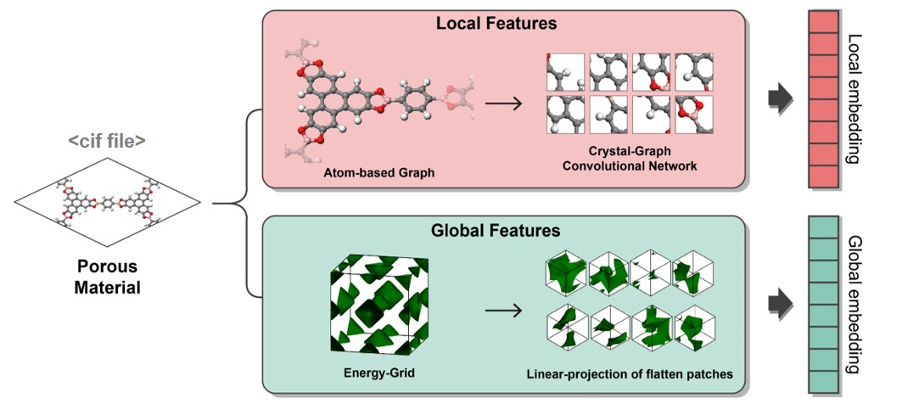

Dataset Preparation#
1. Introduction#

MOFTransformer takes both atom-wise graph embeddings and energy-grid embeddings to capture local and global features,respectively. Both of embeddings are generated from the cif files of MOFs.
(1) atom-wise graph embeddings
Tha atom-wise graph embeddings are taken from the modified CGCNN by removing pooling layer and adding opologically unique atom selection.
(2) energy-grid embeddings
The 3D energy grids are calculated using GRIDAY with the united atom model of methane molecule using UFF.
2.Generate custom dataset#
To generate inputs for MOFTransformer from CIF files, use the moftransformer/utils/prepare_data file to generate atom-wise graph embeddings and energy-grid embeddings. You will need to prepare CIF files and raw_{downstream}.json files in a root_cifs directory.
root_cif: A directory that contains.cifand.jsonfile.downstream: name of user-specific downstream task (e.g. band_gap, gas_uptake, etc).
Example for root_cif#
The example of root_cifs directory is as follows.
root_cifs # root for cif files
├── [cif_id].cif
├── [cif_id].cif
├── ...
└── raw_{downstream}.json
The example of raw_{downstream}.json files is as follows.
{
cif_id : property (float or int),
...
}
Run prepare_data function#
If there is a json files named raw_{downstream}.json in root_cifs directory, then it will be randomly splitted to train, val and test. (Default = 8:1:1).
from moftransformer.utils import prepare_data
# single task
prepare_data(root_cifs, root_dataset, downstream="example")
# multiple tasks (contain several json files in root_cif)
prepare_data(root_cifs, root_dataset, downstream=["example1", "example2", ...])
prepare_data will generate the atom-wise graph embeddings and energy-grid embeddings in root_dataset
directory.
root_dataset # root for generated inputs
├── train
│ ├── [cif_id].graphdata # graphdata
│ ├── [cif_id].grid # energy grid information
│ ├── [cif_id].griddata16 # grid data
│ ├── [cif_id].cif # primitive cif
│ └── ...
├── val
│ ├── [cif_id].graphdata # graphdata
│ ├── [cif_id].grid # energy grid information
│ ├── [cif_id].griddata16 # grid data
│ ├── [cif_id].cif # primitive cif
│ └── ...
├── test
│ ├── [cif_id].graphdata # graphdata
│ ├── [cif_id].grid # energy grid information
│ ├── [cif_id].griddata16 # grid data
│ ├── [cif_id].cif # primitive cif
│ └── ...
├── train_{downstream}.json
├── val_{downstream}.json
└── test_{downstream}.json
3. Dataset for public database (CoREMOF, QMOF).#
we’ve provided the dataset of atom-wise graph embedding and energy-grid embedding for the CoREMOF and the QMOF database in our figshare database.
Or, you can download using command line or python (refer to installation)